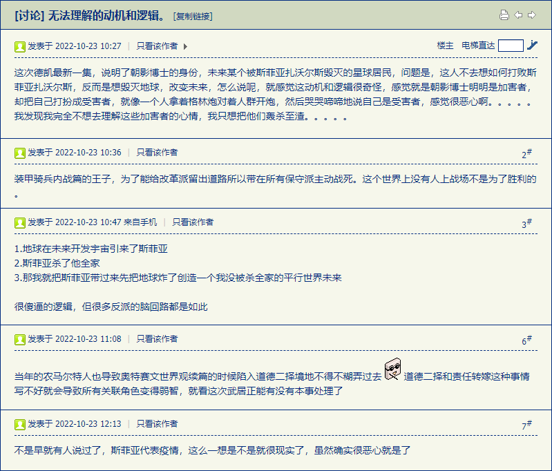
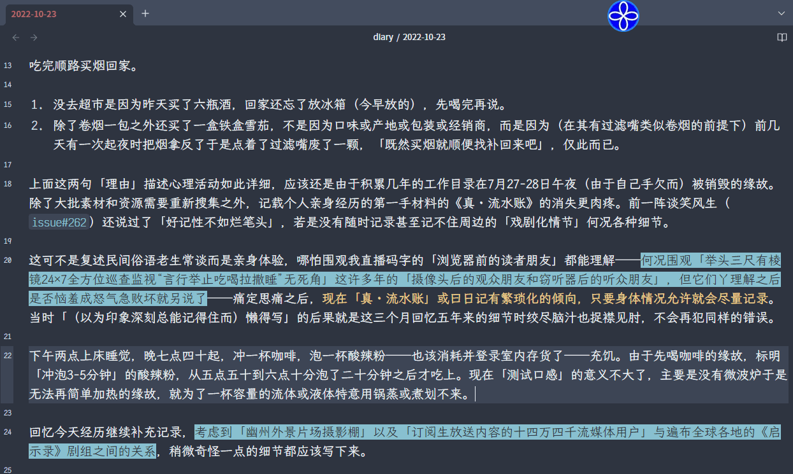
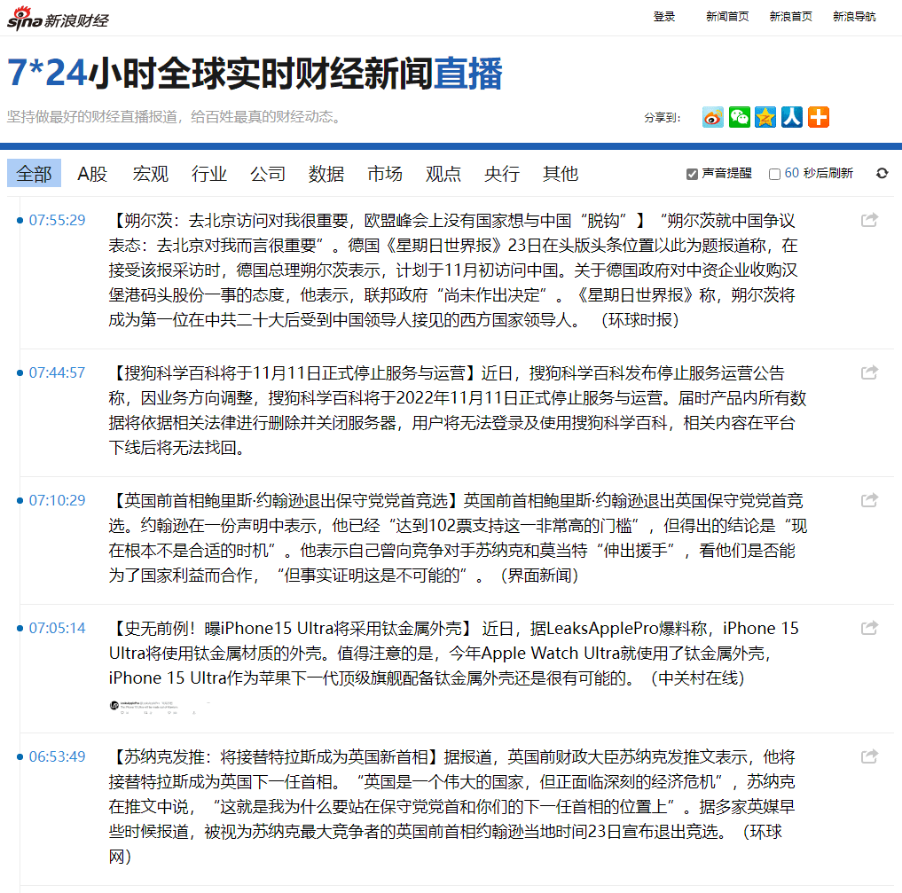
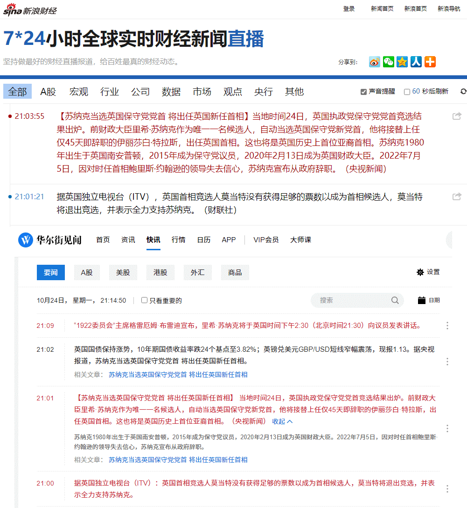
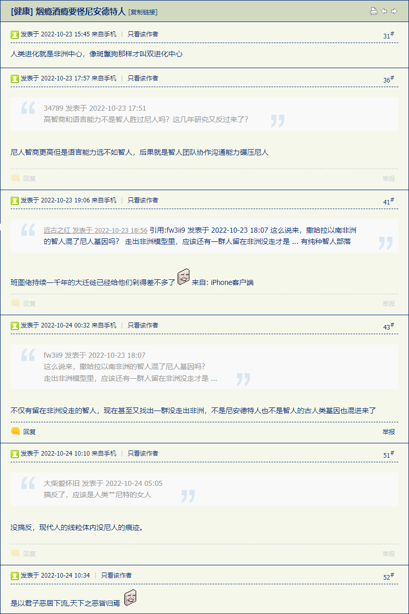
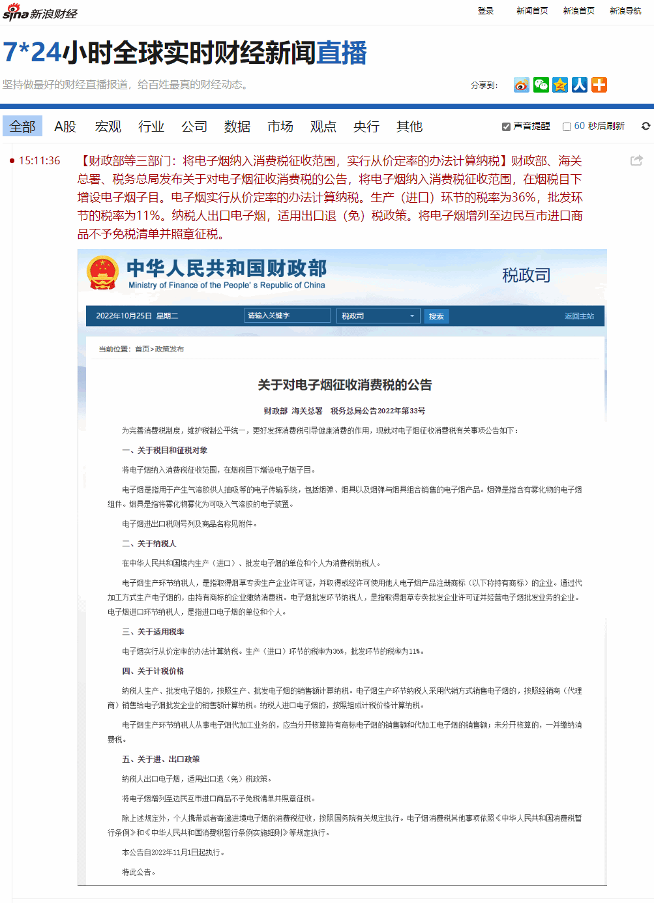

fanhan-inside
长话短说，今天酗酒的时候顺便看了店里电视放的权威机构给出的镜头，苏共中共二十大「公开报告」的时候，场内众生相有多次扫描，想必「电视机前的观众朋友们」不会看走眼，而「收音机前的听众朋友们」就不知道许多重要情报了。
最明显的情况，是「主席台」上也只有「离退休县官」和「应届现管」不戴口罩，后排都戴着，台下那许多「代表」各个戴着口罩，响应了大会主题⸺多举手，少废话。
出门观察周边局势也一样，电梯里碰见的雄性童年才俊不戴口罩，路上遛狗的中年妇女倒是戴着口罩⸺即便嘴里嘟嘟囔囔，按照眼下「党」的政治规矩和组织纪律，照样「说话不算数」就当她放屁有条丁字裤兜着那么理解可也。
前情提要：
还有一个细节，不戴口罩的「县官」和「现管」当中，只有栗战书和王春华的领带是蓝的，其它所有人的领带都是红的，花纹也挡不住底色，雌性县官现管的服装没有领带，但基色全是红的。而其它戴口罩的锤镰帮众的领带颜色，没有在广角镜头当中详细统计，期待好事者瞪眼之劳。
顺便，通过今天的囧斋周边氛围，想通了前两篇日志当中记录的诡异气氛是咋回事了。
简单说，2009年当时中东啥情况，肯定各自发动关系户在境内“拉赞助”⸺就是捞钱⸺当时不违法的“阿拉伯茶”，就是中东某拨人创收的铁杆庄稼地。
后来嘛，2014年起“阿拉伯茶”已经违法了，当然关系户们开动脑筋「道高一尺魔高一丈」喽。
参考最近的权威新闻，之江还率先勒令槟榔下架呢，虽然后来有补丁（估计绿皮人脉到处游说了）说只是不能与食品摆在一起「另案处理」，还遭遇湖南「官方和民间」抗议，正好与并州反共大厦附近军休所的哥布林经营「湘潭铺子」还气焰嚣张的情报不谋而合。
只要没立法，与罂粟大麻阿拉伯茶同属「纯天然绿色无污染农作物」的槟榔⸺就算掺了私货也有「绿色恐怖组织」保驾护航⸺就可以大摇大摆卖遍全国，正如2009年我亲身经历的形势那样。
这次嘛，既然没有仅限（我怀疑当年人民代表大会只是碍于「民族宗教委员会」的压力⸺“这保护费只给你们‘杂胡野种牛鬼蛇神’交吖，我们‘炎黄贵胄龙的传人’捞不着吖”⸺才没有及时立法）清真场合销售，那么这帮关系户的背后势力，就不好说是谁了。
fanhan-inside
范某截图备份于此


fanhan-inside
范某截图备份于此


fanhan-inside
范某截图备份于此


fanhan-inside
补充情报兼素材兼个人亲身经历的第一手材料：
范某截图备份于此


既然开完会了，现在多打几个字，把上面备份的内容略作解释。本篇日志发布的时候，《线索「可萨汗国在行动」备忘录》刚好凑够二百篇。这个整数不意味着任何意义，因为若是把其它篇目补充进来，哪怕目前部分日志按照内容增加备注，也会超过这个数字。
先说「尤里＆尤利娅・铁木辛哥季莫申科」，哪怕不懂鹅语的读者朋友也能看出来名字似乎「大同小异」，那是因为名词的（语法）性别不同。如果尤利娅的老公家名是「季莫申科夫」，那么她就会姓「季莫申科娃」，其实写出其父称/中名「弗拉基米罗夫娜」之后汉语读者就知道该账号（于权威机构注册时经由权威机构鉴定并认证还具有经由强力部门提供武德支持的法律效力的）性别了，只不过「缩写」还是一样。
这是（阅读西式奇幻作品的）常识，在《设定集》注释〔八〕当中提及当年于「原创文学论坛」以写手身份与读者互动并以读者身份与其它写手互动的时候的经历，包括但不限于「父称/中名」的选择，当时多方谈笑风生都有类似默认前提（不至于每次都科普）。
而在以「只懂汉语的写手」身份面向「只懂汉语的读者」的时候⸺当然原因是多方面的，包括但不限于「学术公案」「身份证之谜」，此处略过⸺就需要「注释窜入正文」了，或者直接说针对「以汉语为母语并且立场坚定的扎根于我中华兲嘲上国几千年悠久历史和文化乃至传统风俗习惯不动摇的读者」的特征，需要直接用细节构造情节。
于是在《设定集》第一辑收尾的时候，参考权威机构认证的公开新闻以及其它情报，构思了相关背景：
卡壳世界・作文
“亲爱的维亚切斯拉夫・鲁道福维奇（Вячесла́в Рудо́льфович）”，茨维特科・茨维特科维奇（Цветко Цветковић）按照对等原则展开私人外交工作，“您太客气了”。
“本来以为你会说，我们的关系还没有熟到这个程度呢”，维亚切斯拉夫略感意外，“礼节倒是无可挑剔”。
“我对你们的客套习惯略有耳闻，想必你也对我们有些了解”，茨维特科解释，“我们都知道本来是父称，但早就变成家名了”。
“现在也是父称”，维亚切斯拉夫盯着茨维特科，“货真价实”。
“我爹又不叫茨维特科”，茨维特科话刚出口就觉得不对劲，立刻反应过来，“那你说我的家名应该是什么？”
“茨维特科夫（Цветков）”。
“……”茨维特科太阳穴一跳，略作停顿，盯着对方，皮笑肉不笑，“却不是特地来消遣我？”
⸺《范版西幻设定集》之二十〈新长征路上的摇滚〉
然后按照砥砺奋进十年来的惯例，在我从善如流「扎根于中华民族传统优秀文化服务于兲朝境内广大娱乐至死の逗哔」开始连载《范版东幻异闻录》的时候，这个「安能辨我是雄雌」的细节直接与现实局势同步生放送，直接关系到《启示录》剧组拍摄进度。
就是原版「伤寒马力（Typhoid Mary）」本来是雌性这个经由权威机构认证的历史及生物学和医学事实，结合「盎语拼写才汉译为“马力”，其它语种唤作“马莉娅”或其它变体，希伯来原文则是“马里亚母”」的经由权威机构认证的语言学事实，形成了「参考乌克兰民主先例，谁在背后赞助马力（♂）“坑了”玛丽（♀）这许多年」以及「参考马力（♂）背后团队的宣传文案“扫帚星乌鸦嘴”，玛丽（♀）本尊到底是不是“招灾降祸散布瘟疫”」这两个尖锐的问题，都与《启示录》剧组有紧密关系。
于是十步一岗五步一哨夜不闭户路不拾遗兲子脚下首善之区国际一流和谐宜居之都城乡结合部吉普赛社区充沛着「幽州外景片场摄影棚」剧务就不奇怪了，砥砺奋进十年来乃至「学术公案」以来的亲身经历，此处不再重复。
fanhan-inside
补充情报兼素材：
范某截图备份于此

简单解读如下：
- 当年默克尔夫人安哥拉大妈访华频率就被评价为「留学生回家都不如她来的勤快」，此乃「船大难掉头」表现。从整个德意志民族神圣罗马帝国的范围观察，冷战时期「中德双方」就有各种业务联系，后来「挂钩」更加紧密，导致相关大批人财物之供应链不可能「傻哔腰斩」还以精神胜利法原则修辞为「壮士断腕」。
- 整个搜狐公司成立二十多年来都是不温不火的感觉，多少事业部产品线都如此，曾经被业内评价为「雅虎的成功未必可以复制，雅虎的失败注定被复制并导致其它人成功」。如果国内局势敏感还可以用原版雅虎类比，其成功所倚仗的人脉都有「不熟不做，做熟不出」的传统韭菜地，不可能转型升级。或者更敏感一点从《为什么俄罗斯不生产任何东西？》当中的阐述理解「为什么雅虎干不好任何事情」。
- 钛合金的应用之瓶颈，不是资源⸺地壳含量接近百分之一远超大批常见矿产⸺而是冶炼及加工的技术。这个有大批业内就事论事，引用为素材就是《设定集》注释〔８９〕当中提到的「阿波罗炼金术与戴安娜拔银术」，情节和细节都可以随着今后现实发展而实时影射。
- 南不列颠及北爱尔兰的热闹还是进行时，暂且旁观并搜集素材。由于权威机构约谈的缘故，《设定集》连载暂停，直到老佛爷驾崩于是「第二辑」预想的主要情节都没有悬念了。之前谈笑风生当中已经对浏览器前的读者朋友抱怨过「（若是没有各种孤立突发偶然片面的意外情况）从去年七月到今年九月这一年多时间，第二辑甭说草稿，连正文都写完了」，此处不再重复。
参考由语言学细节导致的现实及架空情节的前情提要：
当时还没看到「奥特曼帝国龙裔之后就在我中华兲嘲上国落户还开办游戏公司」的爆料，后来色目情报掮客也语焉不详，说这位「血脉觉醒之后就从事三洲通衢色目中央的路径依赖者」⸺更难听的话如「在我中华兲嘲上国传统风俗习惯包围中成长但由于基因钦定“劣根性胎里坏”果不其然性状表达为“养不熟的白眼狼”」也有⸺身份证号显示于江西注册，但是没有权威机构认证的唯物主义证据。
这与色目文艺爱好者炒作查博导系列重要讲话精神尤其是《说乔全传》有那么一点关系，按照原版理解才是「江东“慕容复”被满洲“萧峰”缅甸“段誉”新疆“虚竹”暴打」但是无法解释为啥内亚外宾不支持「绿色同胞」。只有挪用到三洲通衢当地，按照奥特曼企图于土耳其复辟「苏丹制」并登基称帝，被周边三个民族、信仰、文化各不相同的联盟粉碎阴谋诡计，才勉强能说通。
于是当时的线索，指向美帝灯塔国约瑟夫大统领那已经过世的户口本长子「薄（Beau）・约瑟佛维奇・拜登」，按照发音拼写，这位「约瑟佛维奇」的孩子所注册帐号当中的「父称」应该是什么？
精通鹅语的消息灵通人士表示「鹅语人名不会以o结尾」所以断定这位「小拜登」即便诈死脱身（参考国务卿克里伪装成骑自行车摔断腿掩饰秘密行踪仿基辛格故事之典故）也不可能如同斯诺登入籍那样融入罗刹社会⸺金日成都有「鹅式」姓名，毛岸英回国时汉语都说不利索于是大救星安排秘书田家英给其「补课」，这些都是权威机构认证的历史事实⸺这些由于「历史原因」形成的莫斯科能在十步一岗五步一哨夜不闭户路不拾遗兲子脚下首善之区国际一流和谐宜居之都维持「“海里有人”“海边有人”“手眼通中央军委/政法委”」的人脉，可不是城乡结合部吉普赛社区「军休所」（原「丰台大营」）哥布林吹牛哔。
然后就是蒋经国先例，只要不像金日成那样用真名实姓，「鹅式」姓名可以随意：
看见蒋经国化名⸺尼古拉・弗拉基米罗维奇・伊利扎科夫（Николай Владимирович Елизаров）⸺的拼写，第一反应就是从语言学细节导致的情节：难道常凯申也有鹅式姓名唤作「弗拉基米尔」？还是由于工作原因被组织安排于武汉理工大学东吴大学就读时「（磕头）认爹（并发誓永远爱之）」？
多少历史爱好者都科普过了，大救星和常凯申在对方党内的地位都曾经比对方更高，色目竞技爱好者则宣称「此乃俱乐部交易球员」（资方行动），同时有色目商界精英用真实的「会社」类比⸺只要参考日本暴力团合法活动的事实，就知道「公司」不是代称⸺只不过是「员工跳槽」（劳方行动）而已。
这两种解读的立场截然相反，大救星接盘脱党四年的五婚艳星，常凯申拖着水银丁日让娇妻守活寡，可都不是什么「爽文」情节。
fanhan-inside
喝多了回来了，简单备份几句「本人刚刚收到的」素材睡了，爬起来再说⸺预计今天事多，未必来得及更新⸺本篇日志也该收尾了。
- 「如果你入职某家公司之后发现短短几个月内换了四个财务总监、三个总经理还死了个德高望重的总裁，你会咋办」⸺很明显影射南不列颠及北爱尔兰联合王国⸺在资方评论劳方行动「员工离职」解读下可以认为跑路移民，而在劳方评论资方行动「清理平庸员工」解读下就会「政治敏感」「亦当删去」即便运用文艺理论指桑骂槐还会由于「血腥暴力」而被大手传媒机构及娱乐会社联合封杀。
- 「有关部门成天骚扰，说我可能收到境外诈骗集团短信，啥意思吖」「那是境外号码的诈骗短信被墙了，之前都是一比一配套的，一条诈骗短信之后立刻就是一条自动化提醒」「想起来了，还有电话接通后气势汹汹倒打一耙贼喊捉贼的：“给你打了那么多次你咋不接呢”“不信你去看‘未接来电’记录”」⸺至于这是提醒谁的，按照职业习惯肯定不惮以最大的恶意揣测，现在酒劲上涌并且等待即将到来的「戏剧化情节」，暂时不下结论。
- 「刚才那桌那几位长得都像隔壁金三胖，笑起来更像」「你知道金三胖在瑞士留学吧，知道是德语区还是法语区么」⸺虽然我很好奇但没有收到下文，这桌也结账走人了，总不能追出去让它们「把话说清楚」吧。
先这些。
卡壳世界・作文
“一般来说，在其它什么国家和地区，首相换届确定之后”，威廉伸出左手，虎口向下手心朝外，作出攥住什么东西的动作，偷眼看了看女人表情，赶紧逆时针旋转胳膊，手心向前，往上一提，同时右手立掌如刀在左手下面划过，做收割韭菜状，“凡尔赛宫的御医就把管子一拔，死神就来了也……你为什么那么看着我？”
⸺《范版西幻设定集》之五〈爱与正义与红灯区〉
写这段的当时，特蕾莎・梅注定下台，同时久经考验的李鹏「蒙主宠召」了也⸺当然了，「统计学上的相关性」不意味着因果关系，这是「常识」。
那么这次南不列颠及北爱尔兰再次「换届」，还是雌性下雄性上，又会有甚么「巧合」呢？
欢迎大手传媒机构及娱乐公司派遣的外包临时工来到十步一岗五步一哨夜不闭户路不拾遗兲子脚下首善之区国际一流和谐宜居之都城乡结合部吉普赛社区，在「举头三尺有棱镜24×7全方位巡查监视无死角」的情况下，搜集比权威媒体还要消息灵通的江湖好汉草莽豪杰地痞流氓泼皮无赖的爆料。
fanhan-inside
补充情报兼素材：
范某截图备份于此



相关线索大部分都在上面截图的出处当中展开过了，很多均已经写入正文，这里不再重复。
简单提供今天备份内容的相关线索。
关于「尼安德特人」，在《设定集》小结〔还续〕当中已经阐述过了「作为并系群的人类」相关设定，当时已经有权威机构认证的调查报告公开发表，包括但不限于撒哈拉以南非洲仍存在「纯种智人」「非智人」部落。由于涉及人类自身，所以结论比较敏感，而同样的调查手段在现当代分子生物学兴起之后，已经在其它物种当中推翻了很多传统上通过宏观性状进行分类的结论。
对于学术史上的争论，在《设定集》之十五〈镜花水月梦幻泡影〉当中作为正文内容展开了一部分，就是真实的林奈与布封之间的学术纠纷，而在《设定集》注释〔９５〕当中详细解释了相关情节，此处不再重复。
而「趋同进化」这个字眼就是上世纪开始流行的，可以运用「长得像不见得有血缘关系」这种生活常识通俗的理解，当然涉及到「影武者」「替身演员」「双胞胎兄弟」之类伪装成文艺理论的阴谋诡计，此处也不再重复。
至于「电子烟」的线索，在《设定集》注释〔100〕当中备份了「烟草疫苗」的现实活动，这是剧情中重要的细节，开篇就预告了「烟斗」道具⸺按照文艺理论，第一幕出现一把枪，第多少幕一定要响⸺所以对比现实局势，如今已经进展到「吸入式疫苗」了也，相关谈笑风生分散在各篇，此处仍不再重复。
对于「全球遭瘟」这几年的相关文艺理论，其实也复述过了，就是杰克伦敦《前所未有的入侵》与浦沢直树《二十世纪少年》，观察其它网友之间的对话内容也判断出此乃老生常谈。在《异闻录》正文当中提到了前者「杰克伦敦行动计划」，并根据世界卫生组织公开命名「COVID-19」的北约音标字母诵读展开细节，还没来及提到后者。
而现实局势的「戏剧化效果」，到了今年初已经展开了，在「瘟疫」之后出现「战争」「饥荒」，情节走向已经明朗了。任何一个对于（作为西方社会背景板的）基督教略有所知的帐号都能看出来，就是《启示录》剧本。而唯一的悬念也能提前预告，「绿色的马代表核污染」这种1945年之后通过影视动漫游戏之类文艺作品主动推送才开始在民间逐步形成的社会共识，不可能在近两千年前《启示录》定稿的时候就确定。
直说就是遥控「幽州外景片场摄影棚」的《启示录》剧组故意向经典文本碰瓷，运用（能掌控具有战略地位的核技术的）高层人脉在全球兴风作浪推动情节。之前还仅仅说「核电站泄漏」，到最近已经出现「脏弹」宣传单了。
实际上宣扬「作者最大剧本钦定导演叫人三更死谁敢留人到五更」文艺理论的广告承接商，在客户的允许之下已经频繁的「剧透」多次，生怕受众记忆只有七秒钟。
说过多少遍了，十步一岗五步一哨夜不闭户路不拾遗兲子脚下首善之区国际一流和谐宜居之都城乡结合部吉普赛社区的江湖好汉草莽豪杰地痞流氓泼皮无赖的言行举止吃喝拉撒睡都是结果不是原因。包括但不限于放话「“海里有人”“海边有人”“手眼通中央军委/政法委”」以及挑衅「全球遭瘟就是给你小子一个人预备的」都未必是吹牛哔。
按照有组织有纪律的点出抱团天赋的「智人」的一贯表现，召开「十四万四千人大会」通过决议之后「可萨汗国大呼拉尔常务委员会」的各种最高指示精神坚决贯彻落实到基层而已。